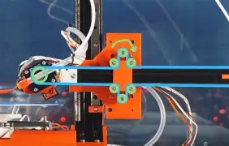
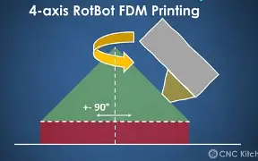
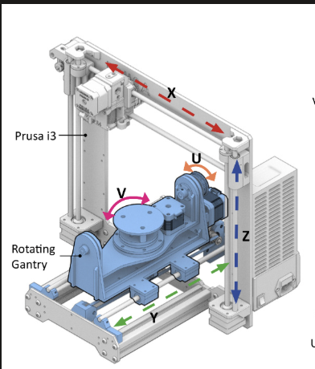
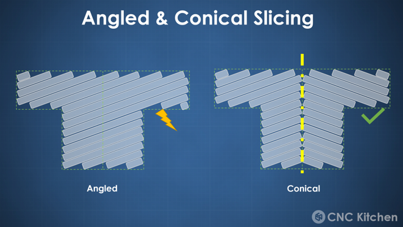
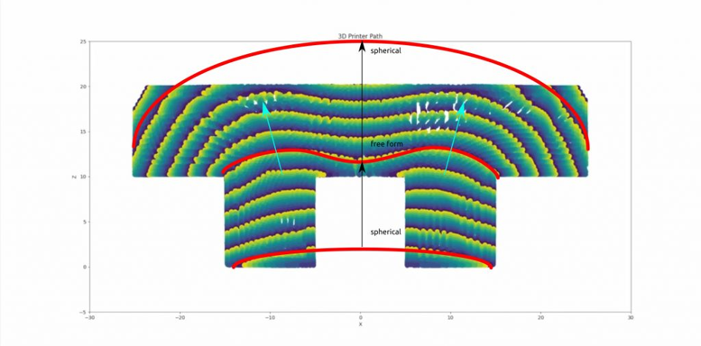
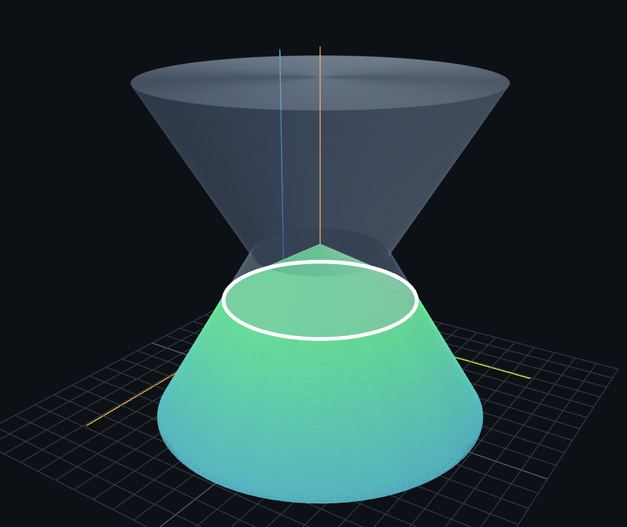
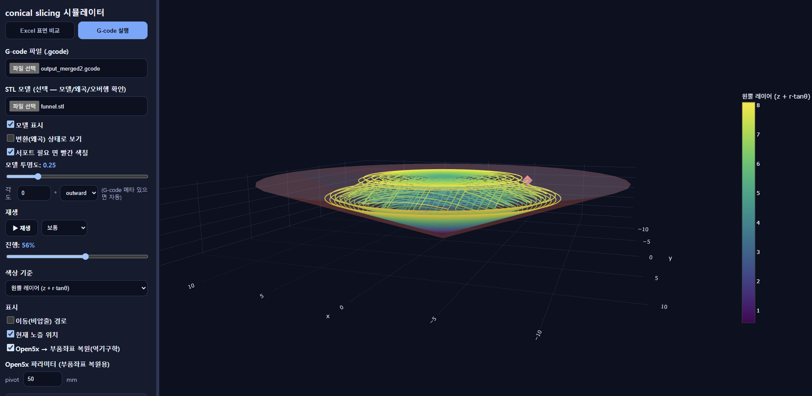
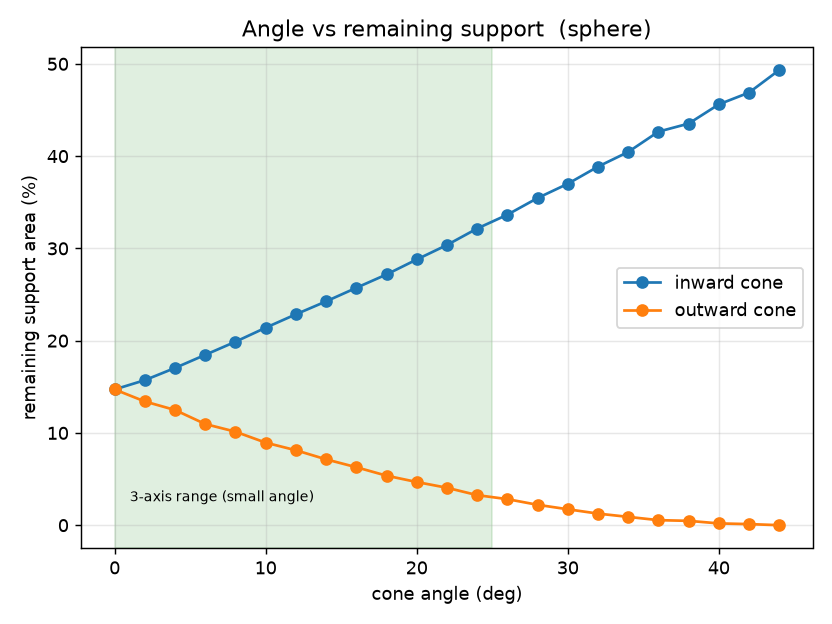
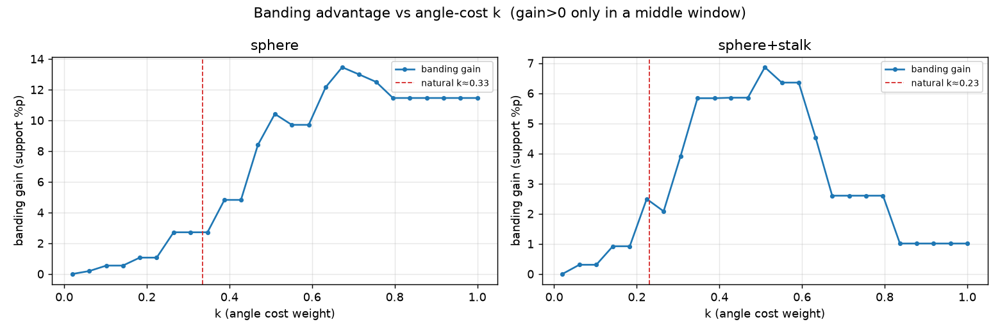
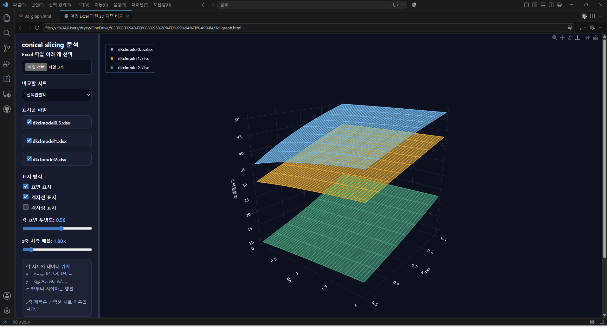

연구 배경
3·4·5축 구조와 다양한 슬라이싱 방법
R&E 온라인 멘토링 발표 자료 · 서울과학고등학교 · 2026/07/27
STL 형상 분석을 통한 원뿔각 자동 선택과 슬라이싱 파이프라인 개발
STL → 형상 분석 → 각도 선택 → 구간 분할 → G-code → 시각화 → 평가
3·4·5축 구조와 다양한 슬라이싱 방법
원뿔각 자동 선택이 필요한 이유
시각화와 원뿔각 선택 코드
G-code 생성과 물리학적 분석
3D 프린터 설계와 실제 출력 검증
01 · 연구 배경

노즐 방향이 고정되어 수평 레이어를 반복 적층한다.


하나의 회전 자유도를 추가하여 단순한 기구로 원뿔 경로를 구현한다.

다양한 노즐 자세를 사용할 수 있지만 기구와 제어가 복잡하다.
01 · 연구 배경
xy평면과 평행한 방향으로 슬라이싱
특징가장 단순하면서 많이 사용함
많은 오버행이 발생할 수 있음
지정한 각도로 기울어진 평행층으로 슬라이싱
특징한방향으로 오버행된 모델을 슬라이싱하기 적합함
지정한 각도의 원뿔각을 갖는 원뿔면으로 슬라이싱
특징원점을 대칭으로 오버행된 모델을 슬라이싱하기 적합함
3d 모델을 분석해 그에 최적화된 슬라이싱
특징오버행을 방지하도록 적응형 슬라이싱
3,4축 프린터에 적용하기에는 자유도가 부족함


제공 이미지 · 상세 출처 추가 필요02 · 연구 목표
출력 방향을 바꾸어 큰 오버행에 대응한다.
형상 방향과 레이어 방향의 불일치를 줄인다.
하나의 회전축으로 원뿔형 경로를 구현한다.
RESEARCH GOAL
STL의 오버행 구조를 분석하여 적합한 원뿔각과 높이 구간을 자동으로 결정한다.
02 · 선행 연구
02 · 연구 목표
형상 분석으로 구간별 원뿔각을 자동 선택
핵심 알고리즘선택된 각도와 높이 구간을 실제 명령 경로로 변환
압출·이동·레이어 경로를 3차원으로 검토
출력 안정성, 운동시간, 충돌 가능성을 평가
모델·각도·조건별 결과를 비교하고 민감도 분석
다섯 기능을 공통 JSON과 로그 형식으로 연결한다.
03 · 중간 연구 성과


교선 시각화는 기하 경로이며 실제 출력 가능한 G-code를 의미하지 않는다.
08 · 원뿔각 반환 알고리즘 A

03 · 중간 연구 성과 B
03 · 중간 연구 성과



왼쪽: 실제 데이터로 측정한 k-선택각 관계 · 오른쪽: Excel 결과를 이용한 모델별·파라미터별 비교
03 · 중간 연구 성과
k 값에 따라 단일각과 구간 분할의 선택 기준이 달라진다
평가함수 차이가 작아 단일각과 구간 분할의 결과 차이가 크지 않다.
구간별 각도 선택의 이점이 커지며 서포트 감소 효과가 가장 크게 나타난다.
추가 분할의 이득이 줄어들어 모델 형상에 따라 최적 선택이 달라진다.
서포트 감소 효과와 분할 복잡도의 균형을 k로 조절해 최종 전략을 결정한다.
공간적 오버행 구조를 보존하고 구간별 각도를 선택하는 목적에서는 Ic 기반 분할이 더 적합하다.
두 방식 모두 G-code 생성은 별도 단계04 · 진행중인 검증
G-code를 X, Y, Z, θ 경로로 변환하고 TOPPRA로 속도·가속도 제한을 반영한다.
후속: jerk가 중요하면 Ruckig 비교노즐·회전 구조·출력물 사이의 기하 충돌을 FCL 기반으로 검사한다.
연속 이동 구간의 충돌 시점 검토비지지 영역 생성 여부를 형상 분석 단계에서 판정하는 로직을 구성했다.
실제 출력 안정성과의 비교는 필요연속 G1 경로를 중심축 원호로 복원하여 G-code 용량과 경로 점 수를 줄인다.
병합 오차와 장비 호환성 검증 필요현재 4축은 X, Y, Z, θ를 우선 사용하고 5축 확장 시 자세 표현을 다시 검토한다.
현재 우선순위에서 제외04 · 진행중인 검증
구간별 원뿔각 결과를 Slicer4RTN 또는 자체 경로 생성 코드에 전달하는 공통 형식이 필요하다.
평면 구간과 원뿔 구간이 만나는 경계에서 경로의 연속성과 압출량을 맞춰야 한다.
겹치는 Ic를 병합한 뒤 대표 각도와 전환 레이어를 결정하는 규칙이 필요하다.
교선이 생성되더라도 층간 접착과 실제 출력 안정성을 보장하지 않는다.
축 속도·가속도·회전량과 노즐 충돌을 각도 평가에 함께 반영해야 한다.
실제 출력 데이터가 부족하며 삼각형 분할 방식이 Ic 결과에 영향을 줄 수 있다.
05 · 향후 연구 계획
아치형·ㄱ자형 모델과 각도·레이어 조건을 구성
표면 품질·출력 시간·서포트·실패 구간 측정
TOPPRA 기반 시간 측정, FCL 기반 충돌 여부 판단
구간 분할·병합 규칙 수정
다양한 메시 해상도와 형상에서 재검증
05 · 향후 연구 계획
STL 형상에 맞는 원뿔각과 구간을 자동으로 선택하는 기반은 마련했으며,
실제 출력과 운동학적 검증을 통해 “출력 가능한 최적각”으로 완성해야 한다.
Wüthrich, M., Elspass, W. J., Bos, P., & Holdener, S. (2020)
DOI: 10.1007/978-3-030-54334-1_10Wüthrich, M., Gubser, M., Elspass, W. J., & Jaeger, C. (2021)
Applied Sciences, 11(18), 8760Hong, F., Hodges, S., Myant, C., & Boyle, D. E. (2022)
DOI: 10.1145/3491101.3519782Zhao, G. et al. (2018)
DOI: 10.1007/s00170-018-1772-9Pham, H., & Pham, Q.-C. (2018)
IEEE Transactions on Robotics, 34(3), 645–659Pan, J., Chitta, S., & Manocha, D. (2012)
DOI: 10.1109/ICRA.2012.6225337각도 분석, 슬라이싱 실험, STL·G-code 시각화 및 발표 자료